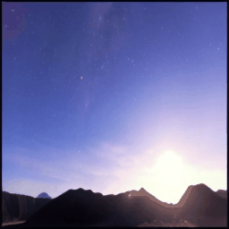
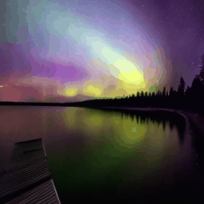
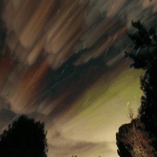
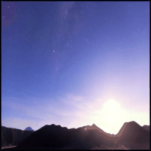
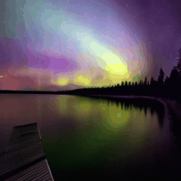
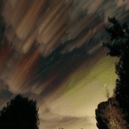

This work introduces Video Diffusion Transformer (VDT), which pioneers the use of transformers in diffusion-based video generation. It features transformer blocks with modularized temporal and spatial attention modules to leverage the rich spatial-temporal representation inherited in transformers. Additionally, we propose a unified spatial-temporal mask modeling mechanism, seamlessly integrated with the model, to cater to diverse video generation scenarios.
VDT offers several appealing benefits. (1) It excels at capturing temporal dependencies to produce temporally consistent video frames and even simulate the physics and dynamics of 3D objects over time. (2) It facilitates flexible conditioning information, \eg, simple concatenation in the token space, effectively unifying different token lengths and modalities. (3) Pairing with our proposed spatial-temporal mask modeling mechanism, it becomes a general-purpose video diffuser for harnessing a range of tasks, including unconditional generation, video prediction, interpolation, animation, and completion, etc. % Extensive experiments on these tasks spanning various scenarios, including autonomous driving, natural weather, human action, and physics-based simulation, demonstrate the effectiveness of VDT. % Moreover, we provide a comprehensive study on the capabilities of VDT in capturing accurate temporal dependencies, handling conditioning information, and the spatial-temporal mask modeling mechanism. Additionally, we present comprehensive studies on how VDT handles conditioning information with the mask modeling mechanism, which we believe will benefit future research and advance the field.

 




